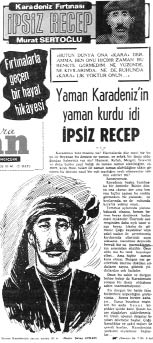
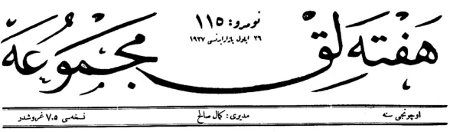

Milli Mücadele tarihimizin önemli şahsiyetleri arasında yer alan ve aynı zamanda bir halk kahramanı olan İpsiz Recep Reis hakkında kitap ve makale türünde bir hayli çalışma mevcuttur. Bu çalışmalara temel teşkil eden en önemli kaynak kuşkusuz Murat Sertoğlu’nun Tercüman Gazetesi’nde 1970 yılı Kasım ayında başlayıp 1971 yılı Ocak ayında tamamladığı “Karadeniz Fırtınası İpsiz Recep” adlı tefrikasıdır.
Rahmetli Sertoğlu, tefrikasının ilk bölümlerine mizansen kurgularla başlamıştır. 1-46. sayılar arasında genellikle kaynak verilmeden anlatılan hikayelerin bir çoğu doğrulanamamıştır. Aksine, buradaki bazı anlatılanların tamamen mizansen yada yanlış olduğunu, tefrikanın diğer sayılarındaki anlatımlardan ya da başka kaynaklardan tespit etmek mümkün olabilmektedir. 47–73 numaralı tefrikalar ise tamamen onu bilen, tanıyan ve birlikte olanların anlatımıdır. Hatta zaman zaman halktan gelen mektuplara da isim ve adres vererek yer vermiştir. Bu açıdan son bölümler oldukça önemli ve kıymetlidir.
Bir çok yazarın görmediği bir diğer önemli kaynak ise henüz İpsiz Recep hayattayken 1927 senesinde “Haftalık Mecmua” için Ereğli Liman Reisi Nazmi Bey’in hatıralarından seçilerek hazırlanan “Karadeniz’in Korsanlar Kralı İpsiz Recep’in Kuvay-ı Milleye’deki Hayret-bahş Maceraları” adlı bir başka tefrikadır. Eski harflerle yayınlanan bu tefrika için İpsiz Recep bir teşekkür mektubu göndermiştir. Mektuptaki ifadeler şu şekildedir:
İstanbul’da Haftalık Mecmua Müdüriyet-i Aliyyesi’ne
Efendim,
Ereğli Liman Eski Reisi Nazmi Beyefendi’nin mecmuanız vasıtasıyla hakkımda göstermiş olduğu teveccühten dolayı söz konusu kişinin adresini bilmediğimden lütfen muhterem mecmuanız aracılığıyla teşekkürlerimin kendilerine ulaştırılmasını rica eyler bu vesile ile saygılarımı sunarım, efendim.
27 Ekim 1927
Sakarya Boğazı’nda Oturan Eski Milis Kumandanlarından
İpsiz Recep Reisi
Ne var ki, Nazmi Bey’in tefrikasında da birçok yanlışların olduğu başka anlatımlar ve Osmanlı arşivi belgeleriyle tespit edilebilmiştir. Bu sebeple hem Sertoğlu’nun tefrikasının ilk sayıları hem de Nazmi Bey’in yazdıkları kritik edilmeden bir tarih çalışması için başlı başına kaynak olacak mahiyette değillerdir. Bununla beraber özellikle Nazmi Bey’in tefrikası, İpsiz’in kendisinin de görmesi ve bir teşekkür mektubu göndermesi sebebiyle detaylardaki kuşkulara rağmen pek fazla değiştirilmeden yer yer kullanılmıştır.

Bunun dışında 1969, senesinde İpsiz Recep’in eşi Nadire Hanım’la, Hayat Tarih Mecmuası muharriri İhsan Birinci’nin yaptığı kısa bir röportajdan sonra isim vermeden kendisini tanıyan ve müfrezesinde görev alanlardan derlediği anılar da İpsiz hakkında yapılan çalışmalara kaynak oluşturmuştur. Bunların dışında Milli Mücadele anılarını yayınlayan bazı mühim şahsiyetlerin hatırat eserlerinde de İpsiz Recep’in kişilik ve faaliyetleri hakkında bilgilere ulaşmak mümkündür. Bu arada Osmanlı Arşivi belgeleri de dönemi anlayabilmek ve kahramanımız hakkında bilgi edinmek için yoğunlukla başvurduğumuz kaynaklar arasında yer almıştır.
Fakat bilgilerin kaynaklarda yer alması -arşiv belgeleri hariç- aradan uzun yıllar geçtikten sonra gerçekleşmiş olması sebebiyle hadiselerin ayrıntılarında hayli farklılıklar görülebilmektedir. Bu farklılıklar kimi zaman yer kimi zaman tarih ve kimi zamanda kişiler üzerinde olmaktadır.
Farklı anlatımlara örnekler
Örneğin Sertoğlu, İpsiz’in yeğeni Hamza’nın Anastas ile meydana gelen bir çatışma esnasında öldüğünden bahsetmektedir.[1] Oysa bir Osmanlı Arşivi belgesinde, Ağva’ya yapılan bir baskın esnasında İpsiz Recep’in bir yeğenini kaybettiği belirtilmektedir. Bilinen İpsiz Recep’in iki yeğeni olduğudur. Kara Emin, Sakarya Savaşı esnasında İstanbul’dan silah naklederken denizde şehit olduğuna göre[2] Ağva baskınında ölen Hamza olmalıdır. Zaten merhum Sertoğlu’nun tefrikasının ilerleyen sayılarında da bir okuyucu bu konuya dikkat çekerek Hamza’nın Şile’de üzüm bağlıkları denen yerde vurulduğunu ve mezarının da Ağva’da olduğunu tashih etmiştir.[3] Bunun gibi Domuzdereli Rum eşkıyalara yapılan baskında İhsan Birinci ve Murat Sertoğlu 17 kişinin öldüğünden bahsetmektedirler. Oysa olayı ayrıntılı bir şekilde rapor eden İstanbul Valiliği, Dâhiliye Nezareti’ne gönderdiği yazıda ölen Rumların sayısını 7 olarak bildirmektedir.[4] Ereğli Liman Reisi Nazmi Bey’in hatıralarında da hadisede 7 Rum’un öldüğü yazılıdır.[5] Fakat bu kez de Nazmi Bey’in vermiş olduğu 21 Mart tarihini yine arşiv kayıtlarıyla karşılaştırıyor ve bu tarihin 13 Mart olduğunu görüyoruz. Bu tarihlerdeki beş-on günlük farklılık belki önemsiz gibi görülebilir ama tarihçiler için hadiselerin gerçekliğini tespit etme açısından oldukça önemlidir. Özellikle de İpsiz Recep gibi hayatı baş döndürücü bir hızda yaşayanlar için bir o kadar daha önem arz etmektedir. Bunu zaten Sertoğlu da doğrulamakta ve şöyle demektedir:
“Hakiki bir halk kahramanı olan İpsiz Recep’in hayatını yazarken okuyucularımdan birçok mektuplar alıyorum. Bu mektuplardan bazıları anlattığım maceralarda ufak tefek bazı yer ve isim yanlışlıkları bulunduğunu da bildirerek düzeltmek lütfunda bulunuyorlar. Ben bu maceraları kaleme alırken hangi olayı kimden ve nereden dinlediğimi açıklamaktan geri kalmıyorum. ‘Hafıza-i beşer nisyanla malul’ olduğundan aynı insanlar zamanla bildiklerini kısmen de olsun unuttuklarına göre isim ve yer yanlışlıkları zaman zaman olabilir. Unutan veya yanlış belleyen kimdir? Orası da pek belli olmuyor. Biz ileride kurtuluş tarihimizi eksiksiz ve tam olarak kaleme alacak tarihçilerimize malzeme hazırlıyoruz.”[6]
Bu çalışma ile hedeflenen İpsiz Recep hakkında en doğru ve olabildiğince fazla bilgiye ulaşmaktır. Bu yapılırken belli konulardaki birkaç rivayet bir araya getirilerek en doğru olanı yakalanmaya çalışılmıştır. Ya da bir birlerinin eksik kısımları tamamlanmaya çalışılmıştır. Bazen de mantıksal olarak doğruya en yakın olanı ana metinde verilip diğer rivayet ya da rivayetler dipnotlarda kullanılmıştır.
Bize bu imkânları hazırladıkları, sağlıklarında iken hadiseleri doğrudan yaşayanlardan derledikleri için merhum Sertoğlu’na ve bilgisine başvurduğu kişilere, Ereğli Liman Reisi Nazmi Bey’e ve sair hatırat sahiplerine rahmet diliyorum.